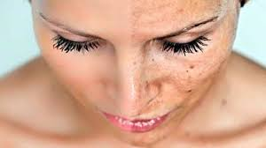
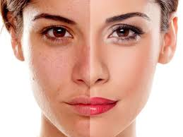
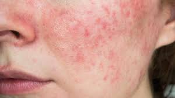

Que causa el maquillaje en la piel El maquillaje puede provocar obstrucción de poros, acné, irritación, alergias y envejecimiento prematuro si se usa excesivamente o no se retira adecuadamente. Sus químicos pueden secar la piel, causar dermatitis y limitar la oxigenación cutánea, lo que resalta líneas de expresión y arrugas..